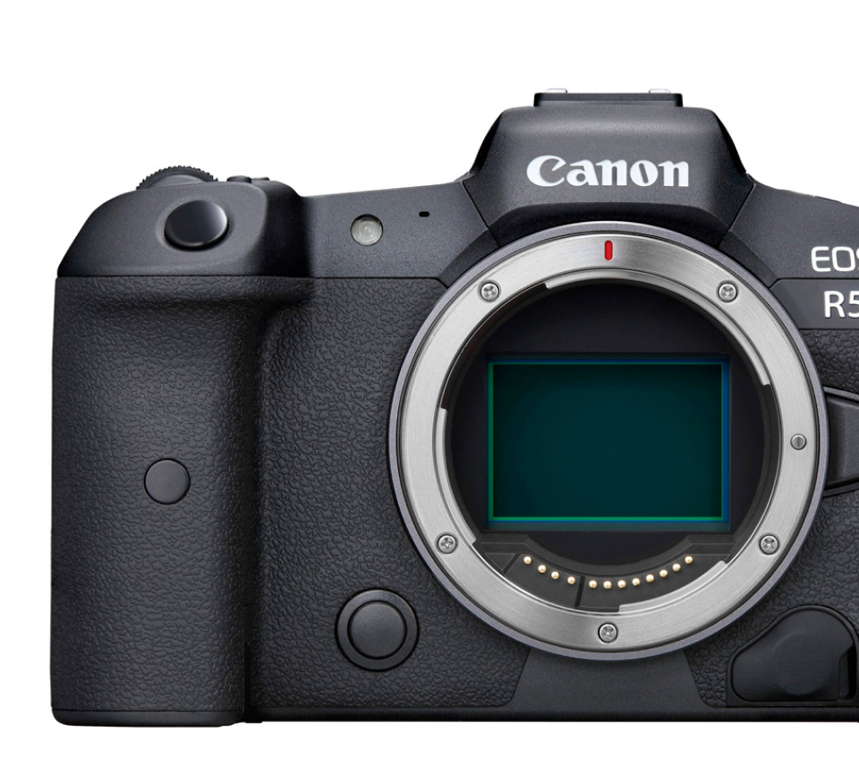

Photographic
Photographic art is the photography-based art of creating a photograph that reflects the creative
vision of the photographer as an artist. It is considered one of the fine arts and occupies one of the key places in
modern mass culture.

What you need:
- 🐾 Camera.
- 🐾 Tripod.
- 🐾 Reflector.
- 🐾 Lenses.
Advantages of ukulele:
- • подходит и для «технарей», и для художников;
- • есть возможности для саморазвития;
- • можно самостоятельно регулировать свою занятость и уровень дохода.
- • Возможность общаться с новыми интересными людьми.
Disadvantages of ukulele:
- • Рутинность работы.
- • Работа в разных погодных условиях.
- • Нестабильный доход
- • Ненормированный рабочий день.